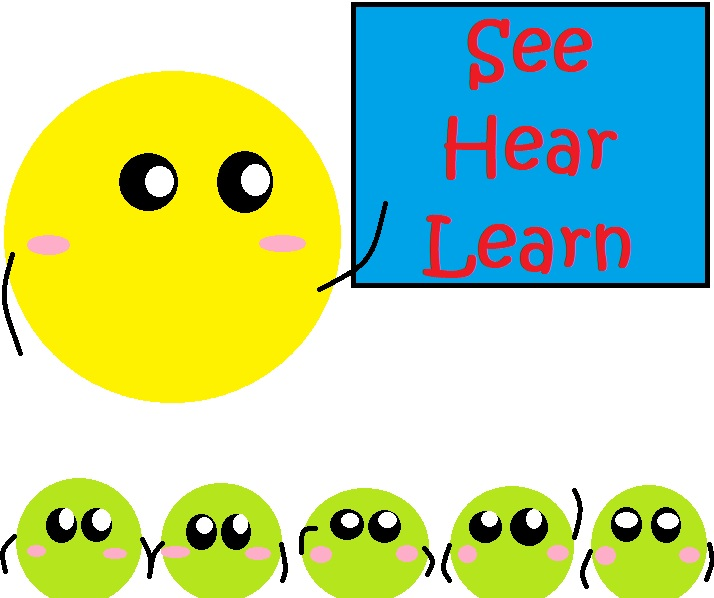
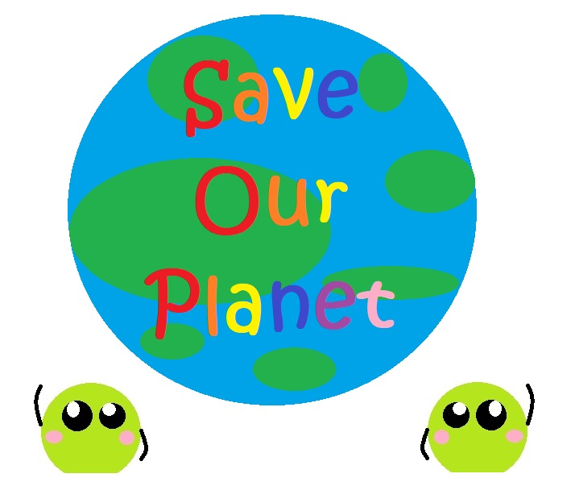

Show & Tell is an educational tool that enables educators to awaken the curiosity of students in 3 simple steps - choose, upload and click. It allows students to expand their knowledge by recognising words and pronouncing them. Educators can utilise this tool during the ICT period, where students can unwind and learn at their own pace. Alternatively, educators can also introduce this tool to aid students in preparation of their Oral examinations.
Children can learn through play and exploration due to their high inner drive to explore, experiment and discover. With that, Show & Tell supports the development of the whole child by providing them with a platform to upload the pictures they like, and providing them with visual and auditory learning, such as new words and pronunciation. Educators can take a new approach to classroom teaching by actively engaging students with Show & Tell material through discussions to stimulate students' thinking and participation.
Show & Tell aims to reduce the environmental impact by moving away from traditional text books, allowing educators to deliver audio visual content that adapts to educational needs.
